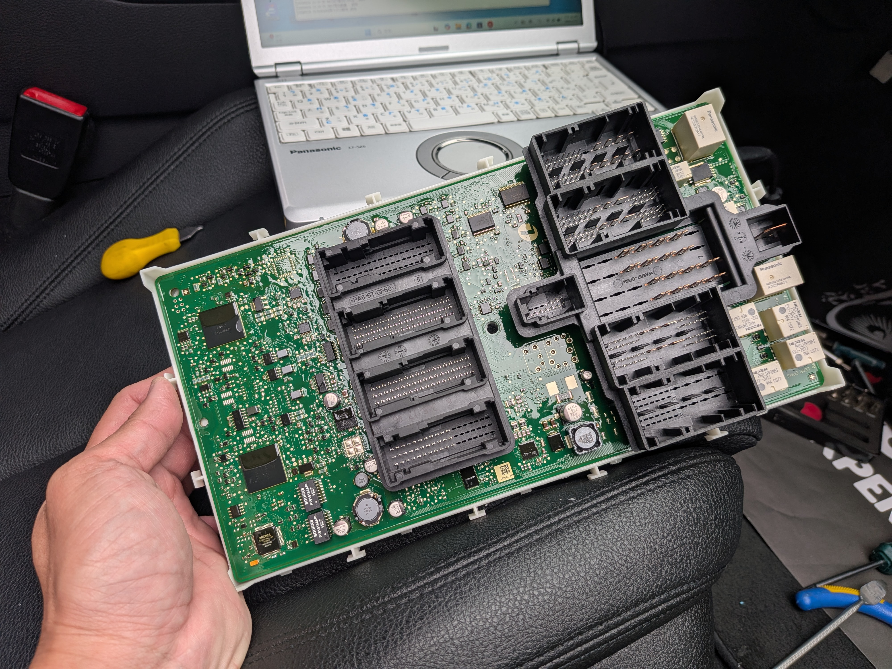
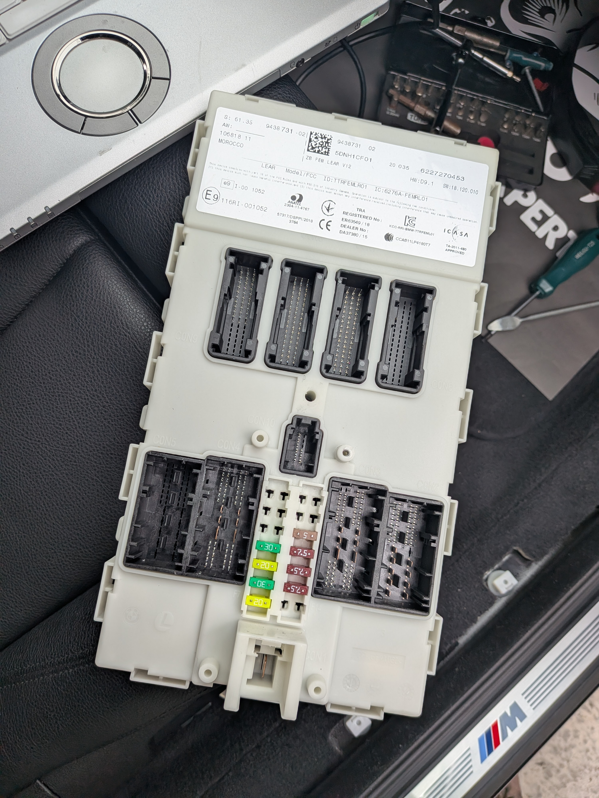

超越「配鑰匙」的極限：電路級的維修
在極致核心的工作室中，我們處理的每一塊 BMW FEM 模組都像是一件藝術品。透過專業工作站與原廠級電腦對接，我們能直接訪問 EEPROM（電子抹除式可複寫唯讀記憶體）與微控制器內部的數據。

模組結構分析
詳盡掌握每個插槽（CON）的定義，確保在讀取數據時不觸發任何防盜警報。

現場無損裝卸
具備原廠維修手冊級別的拆裝工藝，確保施工完成後車內飾板、排線完好如初。
為什麼選擇極致核心進行 BMW 高階解碼？
1. 數據完整性檢驗 (Data Integrity)
每一次讀取後，我們都會進行校驗碼（Checksum）比對，確保防盜數據在計算過程中不發生任何一位元的偏差。這能有效防止「配完鑰匙後儀表亮燈」的後遺症。
2. 專業硬體對接
我們不使用廉價的「夾子」或暴力焊接。採用高品質專用線束，保護 PCB 電路板上的細微焊點，維持原廠電器性能。